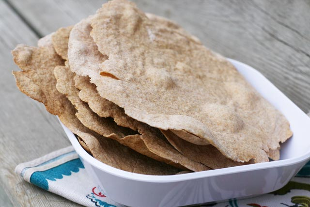

Cómo preparar: Flatbrød

Introducción
Según la web All Recipes es un pan plano noruego muy
típico de la época vikinga, de tipo integral, a untar con mantequilla o queso.
Ingredientes
- Harina de trigo integral (una taza + 1/3)
- Harina para todo uso (una taza + 1/3)
- Aceite de girasol (1/4 de taza)
- Bicarbonato de sodio (1 cucharada pequeña)
- Sal (1 cucharada pequeña)
- Suero de leche (3/4 de taza)
Preparación
- En un bol grande, combinar la harina de trigo integral, la harina de uso general, el aceite de girasol, el bicarbonato de sodio y la sal.
- Añadir el suero de leche para hacer una masa dura y amasar durante 30 segundos en una superficie bien enharinada.
- Cubrir la masa para que no se seque y formar bolas y dar forma de círculo plano.
- Con un rodillo, aplanar la masa en círculos de unos 25 cm. Colócalos en una bandeja de horno sin engrasar.
- Marca los bordes pasando un cuchillo a lo largo de la masa.
- Hornea en un horno precalentado a 175ºC de 8 a 10 minutos.
- Dejar enfriar brevemente en una rejilla antes de abrir por los cortes marcados.